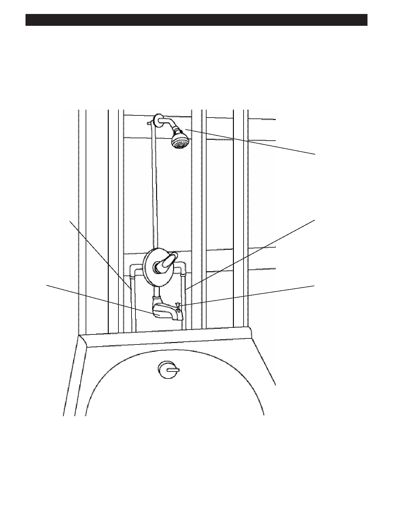

PA RT I C I PA N T R E S O U R C E G U I D E
Tubs and Showers
Tubs and showers are a lot like faucets and sinks. They both have hot and cold
water coming into the system. They have spouts (or showerheads). And there is no
single standard.
Showerhead
Hot water pipe
Cold water pipe
Spout
Diverter
Three Main Types
Three-handle faucets: These use either cartridge (newer) or compression (older) designs.
Two-handle faucets: These use either cartridge (newer) or compression (older) designs.
Single-handle faucet: These newer style faucets use cartridge, ball, or disc designs.
48